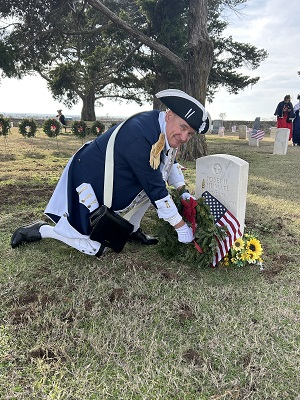
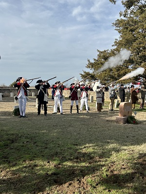

<!DOCTYPE html>
<html>
<!--<em>"The technology you use impresses no one, the experience you create with it is everything -Sean Gerety."</em>

<head>
<meta charset="utf-8">
<title>Wreaths over America</title>
</head>

<body>

<h1><br>
Wreaths Across America</h1>

<h2>The Ceremony</h2>
<p>On Dec. 15, 2024, visitors at Fort Reno Cemetery put Christmas wreaths next to the tombstomes of deceased American veterans as part of a nationwide program hosted by the National Society Daughters of the American Revolution (DAR).</p>

<h2>Program</h2>
<p>Leslie Dietrich and Grace Ellsworth, both members of DAR, provided an introduction and purpose of the event. Their purpose is <em>not to decorate graves</em> but express a "symbol of honor for veterans' sacriface."  An Honor Guard posted and retired the U.S. and other flags.  Taps was played, then Christmas Guns were fired.</p>

<h2><br></h2>

<p>While laying a wreath at a tombstone, many visitors recited the veteran's name.  About 65 people attended, including groups of veterans from the region.</p>

<h2>Location and date</h2>
<p>Fort Reno, Oklahoma.<br>
December 15, 2024.<br></p>

</body>

</html>
